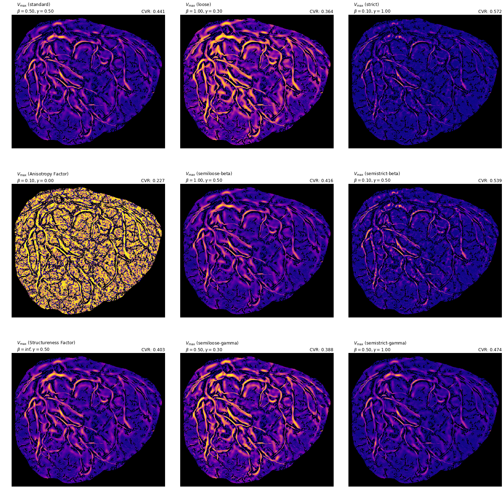
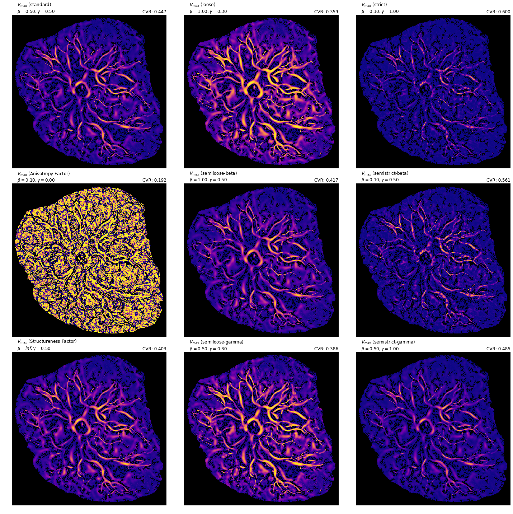

In [6]: run compare_parameters_alt.py
File "/home/luke/pycake/compare_parameters_alt.py", line 77
STRUCTURENESS, SEMILOOSE GAMMA, SEMISTRICT_GAMMA]
^
SyntaxError: invalid syntax
In [7]: run compare_parameters_alt.py
/home/luke/anaconda3/lib/python3.6/site-packages/skimage/util/arraycrop.py:175: FutureWarning: Using a non-tuple sequence for multidimensional indexing is deprecated; use `arr[tuple(seq)]` instead of `arr[seq]`. In the future this will be interpreted as an array index, `arr[np.array(seq)]`, which will result either in an error or a different result.
cropped = np.array(ar[slices], order=order, copy=True)
running standard Frangi on BN0164923
running loose Frangi on BN0164923
running strict Frangi on BN0164923
running Anisotropy Factor Frangi on BN0164923
running semiloose-beta Frangi on BN0164923
running semistrict-beta Frangi on BN0164923
running Structureness Factor Frangi on BN0164923
running semiloose-gamma Frangi on BN0164923
running semistrict-gamma Frangi on BN0164923
/home/luke/anaconda3/lib/python3.6/site-packages/numpy/core/fromnumeric.py:2920: RuntimeWarning: Mean of empty slice.
out=out, **kwargs)
/home/luke/anaconda3/lib/python3.6/site-packages/numpy/core/_methods.py:85: RuntimeWarning: invalid value encountered in double_scalars
ret = ret.dtype.type(ret / rcount)
running standard Frangi on BN0651415
running loose Frangi on BN0651415
running strict Frangi on BN0651415
running Anisotropy Factor Frangi on BN0651415
running semiloose-beta Frangi on BN0651415
running semistrict-beta Frangi on BN0651415
running Structureness Factor Frangi on BN0651415
running semiloose-gamma Frangi on BN0651415
running semistrict-gamma Frangi on BN0651415
running standard Frangi on BN1328016
running loose Frangi on BN1328016
running strict Frangi on BN1328016
running Anisotropy Factor Frangi on BN1328016
running semiloose-beta Frangi on BN1328016
running semistrict-beta Frangi on BN1328016
running Structureness Factor Frangi on BN1328016
running semiloose-gamma Frangi on BN1328016
running semistrict-gamma Frangi on BN1328016
running standard Frangi on BN1650687
running loose Frangi on BN1650687
running strict Frangi on BN1650687
running Anisotropy Factor Frangi on BN1650687
running semiloose-beta Frangi on BN1650687
running semistrict-beta Frangi on BN1650687
running Structureness Factor Frangi on BN1650687
running semiloose-gamma Frangi on BN1650687
running semistrict-gamma Frangi on BN1650687
running standard Frangi on BN2050224
running loose Frangi on BN2050224
running strict Frangi on BN2050224
running Anisotropy Factor Frangi on BN2050224
running semiloose-beta Frangi on BN2050224
running semistrict-beta Frangi on BN2050224
running Structureness Factor Frangi on BN2050224
running semiloose-gamma Frangi on BN2050224
running semistrict-gamma Frangi on BN2050224
running standard Frangi on BN2095839
running loose Frangi on BN2095839
running strict Frangi on BN2095839
running Anisotropy Factor Frangi on BN2095839
running semiloose-beta Frangi on BN2095839
running semistrict-beta Frangi on BN2095839
running Structureness Factor Frangi on BN2095839
running semiloose-gamma Frangi on BN2095839
running semistrict-gamma Frangi on BN2095839
running standard Frangi on BN2432252
running loose Frangi on BN2432252
running strict Frangi on BN2432252
running Anisotropy Factor Frangi on BN2432252
running semiloose-beta Frangi on BN2432252
running semistrict-beta Frangi on BN2432252
running Structureness Factor Frangi on BN2432252
running semiloose-gamma Frangi on BN2432252
running semistrict-gamma Frangi on BN2432252
running standard Frangi on BN4130351
running loose Frangi on BN4130351
running strict Frangi on BN4130351
running Anisotropy Factor Frangi on BN4130351
running semiloose-beta Frangi on BN4130351
running semistrict-beta Frangi on BN4130351
running Structureness Factor Frangi on BN4130351
running semiloose-gamma Frangi on BN4130351
running semistrict-gamma Frangi on BN4130351
running standard Frangi on BN4384182
running loose Frangi on BN4384182
running strict Frangi on BN4384182
running Anisotropy Factor Frangi on BN4384182
running semiloose-beta Frangi on BN4384182
running semistrict-beta Frangi on BN4384182
running Structureness Factor Frangi on BN4384182
running semiloose-gamma Frangi on BN4384182
running semistrict-gamma Frangi on BN4384182
running standard Frangi on BN4569506
running loose Frangi on BN4569506
running strict Frangi on BN4569506
running Anisotropy Factor Frangi on BN4569506
running semiloose-beta Frangi on BN4569506
running semistrict-beta Frangi on BN4569506
running Structureness Factor Frangi on BN4569506
running semiloose-gamma Frangi on BN4569506
running semistrict-gamma Frangi on BN4569506
running standard Frangi on BN5280796
running loose Frangi on BN5280796
running strict Frangi on BN5280796
running Anisotropy Factor Frangi on BN5280796
running semiloose-beta Frangi on BN5280796
running semistrict-beta Frangi on BN5280796
running Structureness Factor Frangi on BN5280796
running semiloose-gamma Frangi on BN5280796
running semistrict-gamma Frangi on BN5280796
running standard Frangi on BN5961598
running loose Frangi on BN5961598
running strict Frangi on BN5961598
running Anisotropy Factor Frangi on BN5961598
running semiloose-beta Frangi on BN5961598
running semistrict-beta Frangi on BN5961598
running Structureness Factor Frangi on BN5961598
running semiloose-gamma Frangi on BN5961598
running semistrict-gamma Frangi on BN5961598
running standard Frangi on BN6028328
running loose Frangi on BN6028328
running strict Frangi on BN6028328
running Anisotropy Factor Frangi on BN6028328
running semiloose-beta Frangi on BN6028328
running semistrict-beta Frangi on BN6028328
running Structureness Factor Frangi on BN6028328
running semiloose-gamma Frangi on BN6028328
running semistrict-gamma Frangi on BN6028328

running standard Frangi on BN6238549
running loose Frangi on BN6238549
running strict Frangi on BN6238549
running Anisotropy Factor Frangi on BN6238549
running semiloose-beta Frangi on BN6238549
running semistrict-beta Frangi on BN6238549
running Structureness Factor Frangi on BN6238549
running semiloose-gamma Frangi on BN6238549
running semistrict-gamma Frangi on BN6238549
running standard Frangi on BN6746662
running loose Frangi on BN6746662
running strict Frangi on BN6746662
running Anisotropy Factor Frangi on BN6746662
running semiloose-beta Frangi on BN6746662
running semistrict-beta Frangi on BN6746662
running Structureness Factor Frangi on BN6746662
running semiloose-gamma Frangi on BN6746662
running semistrict-gamma Frangi on BN6746662
running standard Frangi on BN7531176
running loose Frangi on BN7531176
running strict Frangi on BN7531176
running Anisotropy Factor Frangi on BN7531176
running semiloose-beta Frangi on BN7531176
running semistrict-beta Frangi on BN7531176
running Structureness Factor Frangi on BN7531176
running semiloose-gamma Frangi on BN7531176
running semistrict-gamma Frangi on BN7531176
running standard Frangi on BN7646343
running loose Frangi on BN7646343
running strict Frangi on BN7646343
running Anisotropy Factor Frangi on BN7646343
running semiloose-beta Frangi on BN7646343
running semistrict-beta Frangi on BN7646343
running Structureness Factor Frangi on BN7646343
running semiloose-gamma Frangi on BN7646343
running semistrict-gamma Frangi on BN7646343
running standard Frangi on BN7726580
running loose Frangi on BN7726580
running strict Frangi on BN7726580
running Anisotropy Factor Frangi on BN7726580
running semiloose-beta Frangi on BN7726580
running semistrict-beta Frangi on BN7726580
running Structureness Factor Frangi on BN7726580
running semiloose-gamma Frangi on BN7726580
running semistrict-gamma Frangi on BN7726580
running standard Frangi on BN7753462
running loose Frangi on BN7753462
running strict Frangi on BN7753462
running Anisotropy Factor Frangi on BN7753462
running semiloose-beta Frangi on BN7753462
running semistrict-beta Frangi on BN7753462
running Structureness Factor Frangi on BN7753462
running semiloose-gamma Frangi on BN7753462
running semistrict-gamma Frangi on BN7753462
running standard Frangi on BN7767693
running loose Frangi on BN7767693
running strict Frangi on BN7767693
running Anisotropy Factor Frangi on BN7767693
running semiloose-beta Frangi on BN7767693
running semistrict-beta Frangi on BN7767693
running Structureness Factor Frangi on BN7767693
running semiloose-gamma Frangi on BN7767693
running semistrict-gamma Frangi on BN7767693

running standard Frangi on BN8333878
running loose Frangi on BN8333878
running strict Frangi on BN8333878
running Anisotropy Factor Frangi on BN8333878
running semiloose-beta Frangi on BN8333878
running semistrict-beta Frangi on BN8333878
running Structureness Factor Frangi on BN8333878
running semiloose-gamma Frangi on BN8333878
running semistrict-gamma Frangi on BN8333878

running standard Frangi on BN8549337
running loose Frangi on BN8549337
running strict Frangi on BN8549337
running Anisotropy Factor Frangi on BN8549337
running semiloose-beta Frangi on BN8549337
running semistrict-beta Frangi on BN8549337
running Structureness Factor Frangi on BN8549337
running semiloose-gamma Frangi on BN8549337
running semistrict-gamma Frangi on BN8549337
running standard Frangi on BN8789191
running loose Frangi on BN8789191
running strict Frangi on BN8789191
running Anisotropy Factor Frangi on BN8789191
running semiloose-beta Frangi on BN8789191
running semistrict-beta Frangi on BN8789191
running Structureness Factor Frangi on BN8789191
running semiloose-gamma Frangi on BN8789191
running semistrict-gamma Frangi on BN8789191
running standard Frangi on BN8914395
running loose Frangi on BN8914395
running strict Frangi on BN8914395
running Anisotropy Factor Frangi on BN8914395
running semiloose-beta Frangi on BN8914395
running semistrict-beta Frangi on BN8914395
running Structureness Factor Frangi on BN8914395
running semiloose-gamma Frangi on BN8914395
running semistrict-gamma Frangi on BN8914395
running standard Frangi on BN9211170
running loose Frangi on BN9211170
running strict Frangi on BN9211170
running Anisotropy Factor Frangi on BN9211170
running semiloose-beta Frangi on BN9211170
running semistrict-beta Frangi on BN9211170
running Structureness Factor Frangi on BN9211170
running semiloose-gamma Frangi on BN9211170
running semistrict-gamma Frangi on BN9211170
In [8]: